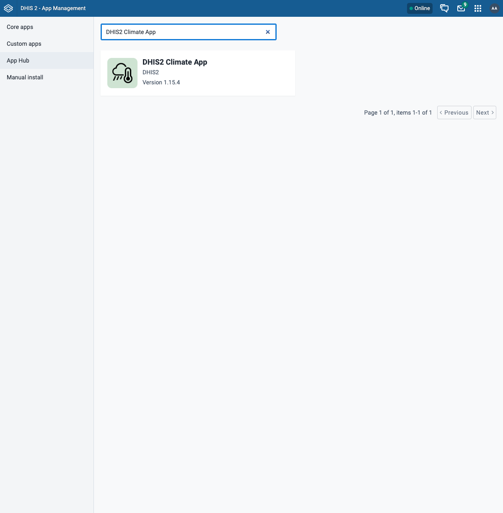
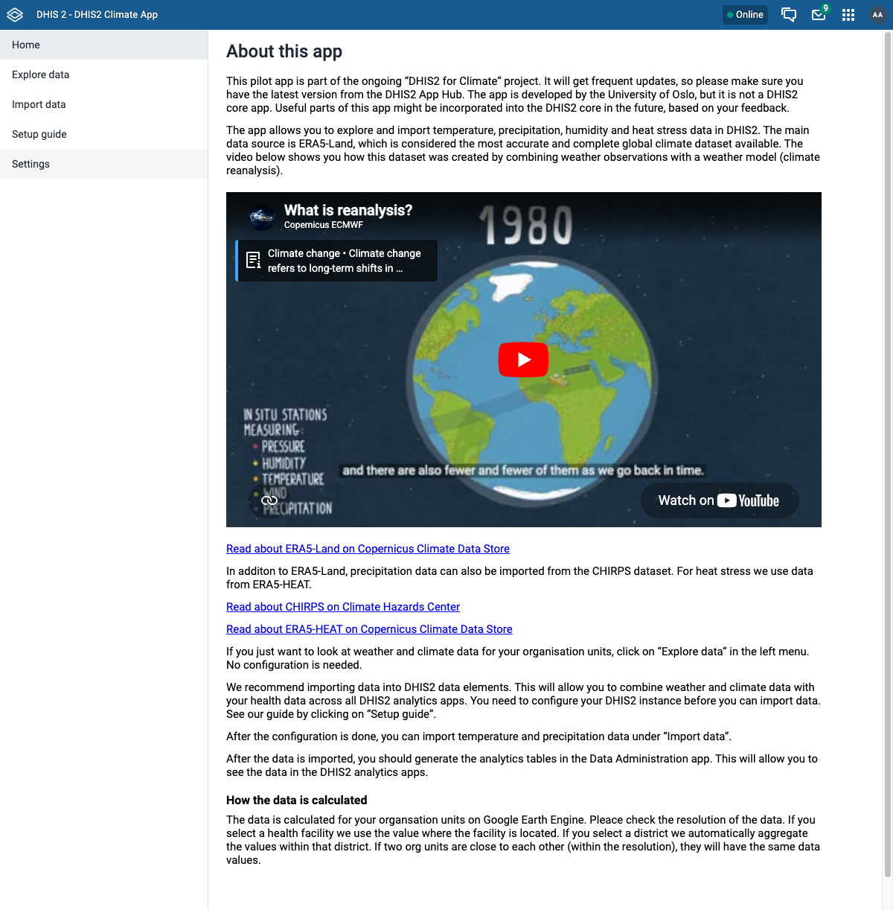
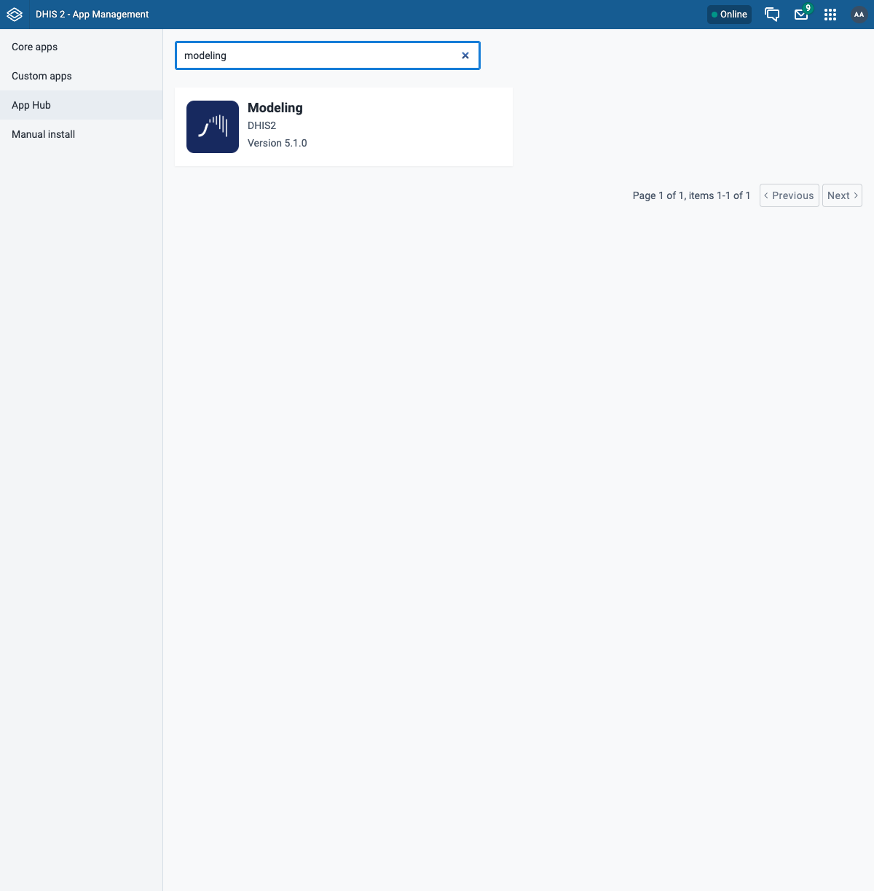
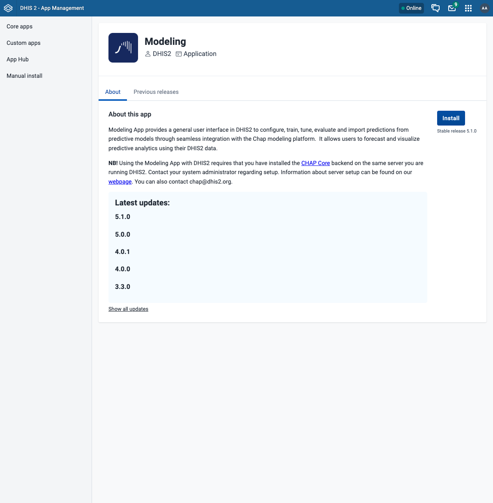
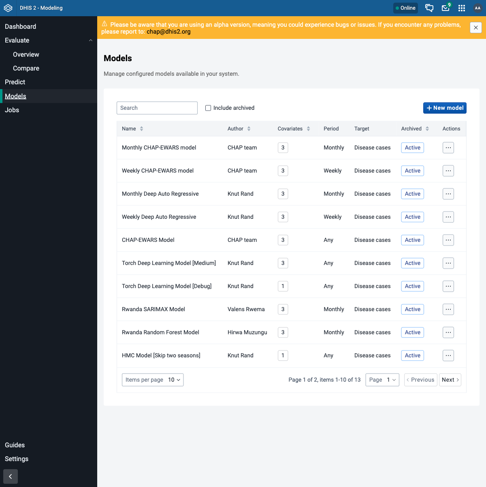

Install the DHIS2 apps¶
This is step 5 of the workshop. Both CHAP setup paths rejoin here.
The climate track uses two DHIS2 apps, both installed from the App Hub inside DHIS2 - no command line needed:
- DHIS2 Climate App - explore and import weather and climate data. It only needs DHIS2, so you can install it any time. We install it here mostly to show what it offers.
- Modelling App - configure, train, evaluate, and import predictions from CHAP models. This is the app you will use the most, and it needs chap-core connected (the previous guides).
Before you start
DHIS2 is running, and chap-core is connected with the route healthy - whichever way you ran it (bundled or from a clone). The Climate App works with DHIS2 alone; the Modelling App needs the chap-core connection.
Step 1 - Open the App Hub¶
In DHIS2, open the apps menu (top-right grid icon) and go to App Management. In the left menu choose App Hub. This is the catalogue of apps you can install with one click.
Step 2 - Install the Climate App¶
Search for DHIS2 Climate App (searching just "climate" also returns an unrelated app, so use the full name) and open it.

Click Install. When it finishes, open it from the apps menu - it lets you explore and import ERA5 climate data for your organisation units.

The Climate App talks only to DHIS2, so it works even without CHAP. We will not use it heavily in this track, but it is worth knowing it exists.
Step 3 - Install the Modelling App¶
Back in App Hub, search for modeling and open the Modeling app.

Click Install (stable release). Notice the app's own note: it requires the CHAP Core backend on the same server - which is exactly what you set up in the previous guides.

The Modelling App needs an authority
The app requires the F_CHAP_MODELING_APP authority. The admin user already has it. To
let other users open the app, add that authority to their user role in the Users app.
Step 4 - Confirm the Modelling App reaches CHAP¶
Open the Modeling app from the apps menu and go to Models in the left menu. If the app can reach CHAP through the route, you will see a list of configured models (CHAP-EWARS and others) loaded straight from chap-core:

Assignment: apps installed and connected
- The Climate App opens and loads.
- The Modelling App opens, and its Models page lists models (e.g. CHAP-EWARS).
If the Models page is empty or shows a connection error, the app cannot reach CHAP - go
back to Connect CHAP and confirm …/api/routes/chap/run/health
returns healthy.
Troubleshooting¶
| Symptom | Likely cause / fix |
|---|---|
| Modelling App shows no models or a connection error | CHAP is not reachable through the route. Re-check the route health (see Connect CHAP). |
| Modelling App is missing from the apps menu | Install did not complete, or your user lacks F_CHAP_MODELING_APP. Re-install and check the user role. |
| App Hub list is empty | DHIS2 cannot reach the central App Hub. Check the machine's internet connection. |
Advanced: installing an app with curl¶
The App Hub install is just an API call, so you can script it - useful for reproducible setups
or headless servers (see the DHIS2 apps / App Hub API).
Find the app's latest version id, then POST to it:
# Find the latest version id for an app by name (e.g. "Modeling")
VERSION_ID=$(curl -s -u admin:district "http://localhost:8080/api/appHub" \
| jq -r '.[] | select(.name=="Modeling") | .versions[0].id')
# Install that version
curl -s -u admin:district -X POST "http://localhost:8080/api/appHub/$VERSION_ID" -w '\nHTTP %{http_code}\n'
A 201 means it installed. This is exactly what the Install button does under the hood -
for normal use, prefer the UI.
Next step¶
Continue to step 6: evaluate and predict. Start with the shared workflow and demo data, then choose the UI or API walkthrough.